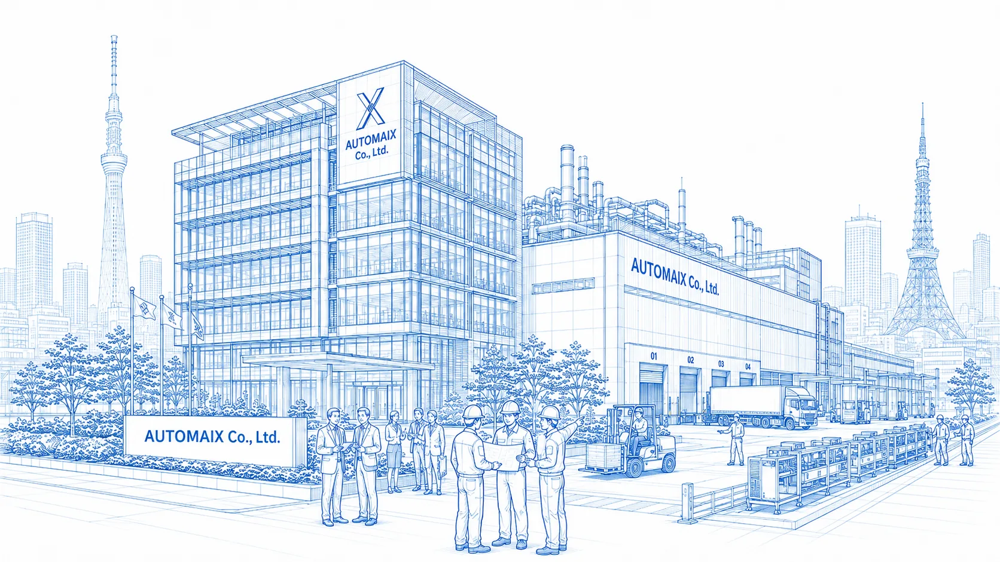

S01 / S02 / S03 / D01 / D02
SorterMX-5
Sort parcels into multi-level destinations and consolidate by order or shipping destination. Five models offer different carriage configurations and induction methods.
View product & specifications
LOGISTICS AUTOMATION
― Created through Japanese quality × Chinese manufacturing × AI technology ―
SMARTER WORKFLOWS, BETTER RESULTS
Combining Japanese quality management and improvement practices, Chinese manufacturing capacity and cost competitiveness, and advanced AI, we pursue balanced quality, delivery times and pricing to support operational efficiency and sustainable growth.
Explore our vision →PRODUCTS
Choose equipment based on your parcels and workflow.
S01 / S02 / S03 / D01 / D02
Sort parcels into multi-level destinations and consolidate by order or shipping destination. Five models offer different carriage configurations and induction methods.
View product & specifications
C01
A compact integrated system for limited floor space. Parcels inducted by an operator are automatically sorted into order destinations.
View product & specifications
T-MX-72-J
A 3D sorter for high-volume parcel and e-commerce operations at large logistics centers. Standard T-MX-72-J specifications provide 72 destinations and throughput of 10,800 items/hour for primary and secondary sorting.
View product & specifications
T-M-48-J
A flexible, space-saving 3D sorter. The T-M-48-J provides 48 destinations and standard throughput of 1,400 items/hour for primary and secondary sorting of small parcels and varied products.
View product & specifications
T-SL-50-J / T-SL-60-J
The space-saving SL series offers standard configurations of 40–50 destinations and 1,000 items/hour for T-SL-50-J, and 48–60 destinations and 1,250 items/hour for T-SL-60-J.
View product & specifications
Loop configuration
Belts on carriers arranged in a loop discharge parcels sideways. Designed for parcel, e-commerce and postal hubs serving many destinations.
View product & specifications
Narrow-belt configuration
Parallel narrow-belt modules convey and divert parcels. Configuration can be planned around line length and the required number of destinations.
View product & specifications
High-density driven rollers
Controlled roller orientation enables straight travel, left/right diversion and angled sorting. Suitable for bags, flexible packs and cartons.
View product & specifications
Vertical circulation configuration
A vertical circulation mechanism and compact belt carriers sort flexible packs, flat items, collection bags and cartons.
View product & specifications
Equipment offered
A sorter that diverts parcels to destinations during conveying. Configuration is proposed after reviewing parcel types, destination count and conveying conditions.
View product & specifications
Equipment offered in Japan
Equipment offered for small-parcel sorting. Contact us to confirm supported dimensions, throughput and line configuration.
View product & specifications
Equipment offered in Japan
Sorting equipment using modular belts. Configuration is reviewed against parcel types, required destinations and line layout.
View product & specifications
Continuous conveying
A continuous belt surface carries small items, bags and flat parcels, connecting DWS and sorting equipment with upstream and downstream processes.
View product & specifications
Carton conveying & accumulation
Conveys cartons and reusable containers. Section-level movement, stopping and accumulation can connect with merges and diversions.
View product & specifications
Loose-parcel singulation
Coordinated conveying modules separate mixed parcels, adjust orientation and establish spacing before reading, measurement and sorting.
View product & specifications
Dimensioning, weighing and barcode scanning
Acquires barcodes, dimensions, weight and images without stopping parcels. Collects data for inbound/outbound measurement, tracking and freight calculations.
View product & specifications
Contactless tag identification
Antennas, readers and a pass-through frame identify RFID tags. Suitable configurations can be considered for hidden barcodes or multiple-tag reading.
View product & specifications
Single-side / double-side configuration
The patterned surface and flexible chute geometry guide parcels smoothly. Buffer rollers at the outlet help reduce impact.
View product & specifications
Line merging
Auxiliary equipment for connecting conveying lines. Configuration is based on the merge location, flow rate and existing line connections.
View product & specifications
Parcel position adjustment
Auxiliary equipment that adjusts parcel position before downstream processing. Configuration is reviewed against line conditions and parcel types.
View product & specificationsLOGISTICS WORKFLOW
Unload goods and register receiving information.
Automatically measure dimensions and weight and read barcodes.
Store goods temporarily and manage inventory according to shipping instructions.
Separate overlapping goods and convey them individually.
Sort goods into broad delivery areas and destinations.
Sort goods by delivery route and service.
Consolidate goods by destination, check labels and prepare loads.
Load goods onto trucks for dispatch.
APPLICATION & MOVIE
An illustration of parcel conveying and order consolidation across multiple sorting destinations.
View product configuration →An illustration of sorting and operation in limited installation space.
View product configuration →INTEGRATION PROJECTS

Completed August 1, 2025

Completed May 10, 2025
ABOUT AUTOMAIX
From planning and sales to system design, implementation, maintenance and technical consultation. Our Japan company discusses your facility conditions and operational challenges with you.
Our factories manufacture logistics conveyors and automated lines at two production sites in Wujin, Changzhou and Danyang, Zhenjiang.
Factory figures: as of September 30, 2026.
Explore manufacturing & technical capabilities →INTRODUCTION & SUPPORT
We review parcel dimensions and weights, required throughput and current challenges.
Equipment is selected around available space, destination count and existing line connections.
We confirm operating conditions, power supply, temperature range, installation steps and maintenance scope.
Installation, commissioning and operating support are agreed for each project.
NEWS
DOWNLOADS
COMPANY PROFILE / 2026.10
An introduction to our Japan company and our factories, including manufacturing capabilities and project experience.
Register to download →3D SORTING / 2026.10
Specifications for SorterMX-5 and SorterMN-3, plus selection and consultation points for models offered in Japan.
Open English PDF →CONTACT
Tell us about your parcels and facility conditions. We will help you review product selection and configuration.
+81-50-6864-1858
info@automaix.co.jp
This form prepares an email draft. Send it using your own email app. If the app does not open, copy or download the draft and send it to the address above.